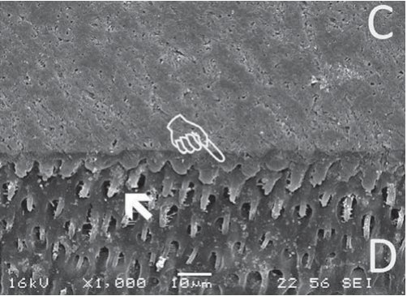
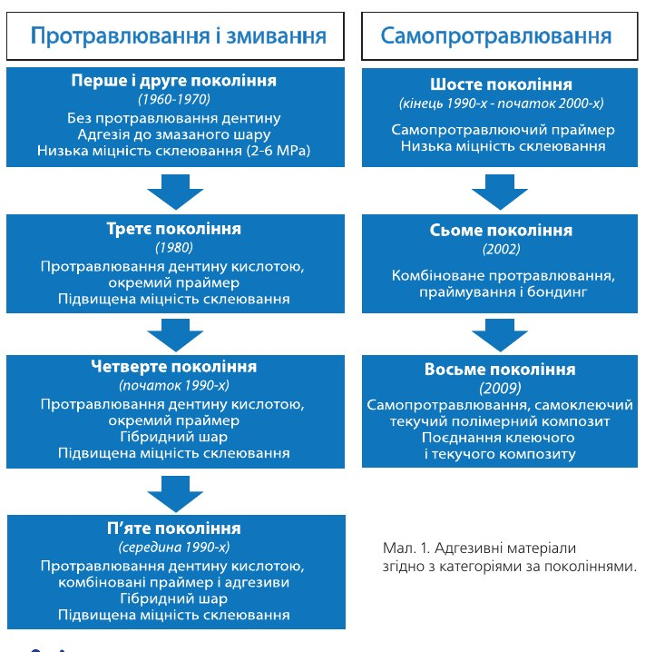

Наука · журнал «ДентАрт» 2013 №4 (73)
Стоматологічні адгезивні системи: переклад науки. Початок
DENTAL ADHESIVE SYSTEMS: TRANSLATING THE SCIENCE
Розвиток адгезивних систем (огляд)
Адгезія у стоматології є величезним простором, який став предметом видатних досліджень упродовж кількох десятиліть, досягнення яких зробили неоціненний вплив на сучасну реставраційну стоматологію.1, 2 Ранні спроби відновити зуб переважно базувалися на механічній ретенції, яка досягалася шляхом видалення твердих тканин і створення «ластівчиних хвостів», ретенційних борозен, піднутрень і гострих внутрішніх кутів. Нині видалення твердих тканин зуба не є виправданим підходом, оскільки розроблена методика мінімально-інвазивної стоматології.3 Ця сучасна техніка ґрунтується на консервативному дизайні порожнини і видаленні тільки тканин, уражених карієсом. Цей підхід значно залежить від переваг адгезивних технологій.
Розвиток адгезивних технологій розпочався з відкриття Буонокоре, який довів, що кислотне протравлювання емалі значно підвищує адгезію.4 Знадобилося близько 30 років, щоб зрозуміти, що не лише емаль, але й дентин потребують протравлювання для поліпшення загального приклеювання.5 Видалення мінеральної фази з поверхневих шарів дентину за допомогою протравлювання оголяє дентинну колагенову матрицю, що у свою чергу призводить до адгезивної інфільтрації і забезпечує надійне приклеювання. У результаті процесу, за якого мінерали видаляються з твердих тканин зуба і заміщуються композитним мономером, утворюється гібридний шар.6 Цей проміжний шар дентину, посиленого полімером, дозволяє з'єднати дві різні субстанції, що ефективно запечатує поверхню дентину і краї реставрації (фото 1).

Адгезиви, що вимагають протравлювання і змивання
Важливим аспектом у процесі адгезії є наявність ошурків на поверхні дентину у вигляді змазаного шару і пробок. Ортофосфорна кислота видаляє змазаний шар, тим самим забезпечуючи пористу основу для бондингу шляхом інфільтрації адгезивним полімером.2, 7, 8 Виходячи з цих даних, був виділений протокол надійного бондингу, який включає повне видалення змазаного шару шляхом кислотного протравлювання, що згодом було назване підходом «протравлювання і змивання». Для того, щоб зробити гідрофільний дентин сумісним з гідрофобним композитом, після кислотного протравлювання слід нанести специфічний адгезивний агент-праймер, який містить гідрофільні функціональні мономери і зв'язується з голою колагеновою матрицею дентину. Останнім етапом є нанесення гідрофобного полімеру, який відповідає за створення гібридного шару. Ці багатоетапні стоматологічні адгезивні системи з'явилися на ринку в ранніх 90-х і досі можуть вважатися системами «золотого стандарту».7, 9
Незважаючи на той факт, що адгезиви «золотого стандарту», які вимагають протравлювання, забезпечують достатнє і міцне склеювання, у літературі було описано кілька їх недоліків. Першим номером у списку недоліків є чутливість техніки, що безпосередньо пов'язане з етапом протравлювання. Зокрема, дентин – це складна структура, чутлива до зовнішнього середовища. Протравлений дентин і демінералізована колагенова матриця можуть спадатися під впливом просушування повітрям, тим самим ускладнюючи адгезивну інфільтрацію і формування гібридного шару. Тому для поліпшення інфільтрації полімером і збереження структури колагенової мережі було запропоновано техніку вологого бондингу, під яким розуміють злегка вологе середовище.10, 12 Проте техніка вологого бондингу може обернутися феноменом надмірної вологості. Залишки води на поверхні дентину можуть негативно вплинути на ефективну адгезію до дентину.12, 13 Визначення, наскільки вологою має бути поверхня дентину, залишається головною проблемою, і тому складно стандартизувати клінічний протокол.
Інша проблема, супутня використанню адгезивів, що вимагають протравлювання, — це післяопераційна чутливість. Ризик її виникнення пов'язаний з неповною інфільтрацією полімером. Іншими словами, фосфорна кислота — це агресивний агент, який глибоко видаляє мінеральну фазу дентину. Тому адгезивний полімер не завжди запечатує протравлену поверхню на всю глибину. В результаті неповної інфільтрації між дентином і адгезивним шаром залишаються мікропростори.14 І нарешті, використання адгезивів, що потребують протравлювання, вимагає більшої кількості клінічних етапів і тривалішого прийому, що займає час як пацієнта, так і лікаря.2
Самопротравлюючі адгезиви
З метою заощадження часу лікаря і пацієнта у сучасній адгезивній стоматології з'явилася необхідність спростити роботу з адгезивами і таким чином скоротити тривалість прийому. В результаті був запропонований альтернативний самопротравлюючий підхід. Ця стратегія не вимагає протравлювання фосфорною кислотою, оскільки кондиціонування відбувається одночасно з праймуванням структур зуба. Оскільки у самопротравлюючій техніці немає етапу змивання, то немає і необхідності видалення змазаного шару, оскільки він використовується як субстрат для створення гібридного шару.2, 7, 15-17 Спочатку була запропонована двокомпонентна самопротравлююча система, де протравлювання відбувалося одночасно з праймуванням, а бонд наносився окремо як другий етап.2, 8, 19
Надалі адгезивні системи еволюціонували до самопротравлюючих систем «все-в-одному», які комбінували праймування, бондинг і протравлювання в один етап. Зрештою цей підхід розцінювався як зручніший і з менш чутливою технікою.2, 18, 19
Класифікація
З метою обговорення хронологічної еволюції стоматологічних адгезивів їх було поділено на категорії за поколіннями (мал.1).20
При використанні першого і другого покоління адгезивів протравлювалася тільки емаль, тоді як дентин залишався покритий змазаним шаром. Потенціал адгезії цих систем був обмежений. Третє і четверте покоління адгезивних систем передбачало кислотне протравлювання дентину і нанесення праймера. Приклади продуктів цієї категорії четвертого покоління досі популярні на стоматологічному ринку: ОптіБонд ФЛ (Керр), Адпер Скотчбонд Мултипьопес (3М ЕСПЕ) і Олл-бонд 3 (Біско). Ці адгезивні системи мають високу ефективність бондингу і тривалий клінічний і науковий період випробування. Проте складність цих систем, вже описана у цій статті, вимагала від виробників спрощення процесу їх застосування.

Адгезивні системи п'ятого покоління поєднують праймер і адгезив в одній пляшечці, але в той же час вимагають нанесення фосфорної кислоти. Ці системи були представлені в середині 90-х, матеріали цієї категорії — Прайм енд Бонд ЕнТі (Дентсплай), ОптіБонд Соло Плюс (Керр), Адпер Синглбонд (3М ЕСПЕ). Ці системи характеризуються надійним потенціалом бондингу, проте залишають проблему визначення ідеальної вологості тканин зуба.
До шостого покоління адгезивних систем належать самопротравлюючі адгезиви, які не вимагають окремого нанесення фосфорної кислоти. Ці системи протравлюють і праймують тканини зуба одночасно. Деякі представники цієї категорії — КліафілСЕ Бонд (Курарей Дентал), Адпер Промпт Л-поп (3М ЕСПЕ) і ОптіБонд ІксТіЕр (Керр).
Системи сьомого покоління — адгезиви «все-в-одному» — комбінують протравлювання, праймування і бондинг в одному етапі. Ці системи в одній пляшечці легко використовувати, і помилки при їх застосуванні малоочікувані. Матеріали цієї категорії — АдгеСЕ Ван (Івоклар Вівадент), Ксено V (Дентсплай) і Бонд Форс (Токуяма).
Категорія восьмого покоління адгезивів тільки нещодавно була додана в номенклатуру. Це самоадгезивні композити, або «компобонди». Система об'єднує в одному матеріалі і бондинговий агент «все-в-одному», і текучий композит. Це означає, що цей матеріал виключає використання не лише фосфорної кислоти, але й адгезивної системи. Він є і бондом, і композитом, тим самим мінімізуючи час прийому і чутливість техніки.21-23 Нині на стоматологічному ринку доступні два самоадгезивні текучі композити — Вертис Флоу (Керр), який випускається з 2009 року, і Фьюзіо (Пентрон), запущений у виробництво нещодавно.
Також адгезиви можуть класифікуватися залежно від кількості етапів їх застосування. Виділяють три основні групи24 (таблиця 1):
- Триетапні системи, в яких протравлювання/змивання, праймування і бондинг провадяться окремо.
- Двоетапні системи, які створюють адгезію шляхом протравлювання і змивання або самопротравлювання. У двоетапній техніці протравлювання і змивання окремо проводиться протравлювання, а праймування і бондинг — одночасно. Що ж до двоетапних самопротравлюючих адгезивів, протравлювання і праймування відбуваються одночасно з першим етапом, після чого другим етапом окремо наноситься бонд.
- Одноетапні самопротравлюючі адгезиви, тобто адгезиви «все-в-одному», при одноразовому нанесенні яких здійснюється і протравлювання, і праймування, і бондинг.
Чи підвищився потенціал бондингу після спрощення?
| Кількість етапів | Стратегія протравлювання | Процедури застосування |
|---|---|---|
| 3 | Протравлювання фосфорною кислотою | Протравлювання фосфорною кислотою, праймування і бондинг |
| 2 | Протравлювання фосфорною кислотою | Протравлювання фосфорною кислотою, праймування + бондинг |
| Самопротравлювання | Протравлювання + праймування і бондинг | |
| 1 | Самопротравлювання | Протравлювання + праймування + бондинг |
| 1 | Самопротравлювання | Самопротравлювання, самоклеючий текучий полімерний композит |
Адгезивні системи «все-в-одному»
Адгезиви «все-в-одному» – це категорія самопротравлюючих бондинг-агентів, які поєднують протравлювання, праймування і бондинг в одному етапі. Отже, цей підхід розцінювався як зручніший і менш чутливий до техніки, що в результаті сприяє підвищенню клінічної ефективності. До того ж, ці адгезиви зводять до мінімуму час лікування, що потенційно підвищує довіру пацієнта.16, 25, 26
Інша потенційна перевага використання таких адгезивів — це їх здатність до демінералізації і, одночасно, інфільтрації на одну і ту ж саму глибину, що теоретично запобігає післяопераційній чутливості, потенційному ризику, пов'язаному з неповною інфільтрацією полімером.14
Крім того, адгезиви «все-в-одному» забезпечують подвійний бондинг, що складається з мікромеханічної взаємодії і хімічної.
Іншими словами, знижена кислотність цих систем частково демінералізує зубний субстрат, тим самим залишаючи вільний гідроксиапатит для хімічного зв'язування (бондингу).27 Цей подвійний механізм зв'язку імовірно дуже корисний з точки зору ефективності бондингу. Проте гібридний шар, що створюється за допомогою цих адгезивів, тонший, ніж при використанні адгезивів, які вимагають протравлювання і змивання.27, 28
Морфологічні особливості гібридного шару, створюваного адгезивами «все-в-одному», більшою мірою залежать від рН.28, 29 Отже, ґрунтуючись на їх кислотності, самопротравлюючі адгезиви було поділено на категорії з високою (рН<1), середньою (рН=1,5) і помірною кислотністю (рН>2).28
Самопротравлюючі адгезиви з високою кислотністю здатні забезпечувати відносно глибоке протравлювання як дентину, так і емалі. Більше того, було встановлено, що поверхневі характеристики, продуковані цими системами, мають близьку подібність до характеристик, що їх одержують при використанні адгезивів, котрі потребують протравлювання і змивання, навіть при незмитій демінералізованій субстанції. І навпаки, адгезиви з помірною кислотністю забезпечують часткову демінералізацію, залишаючи вільний гідроксиапатит доступним для можливої додаткової хімічної взаємодії. Проведені дослідження засвідчили, що адгезиви «все-в-одному» з помірною кислотністю забезпечують вищу адгезивну ефективність.30
Помірні самопротравлюючі адгезиви (адгезиви з низькою кислотністю) можна розглядати як досконаліші завдяки їх подвійному механізму зв'язування.
Продовження буде.
Переклад Романа Савости
Закінчення статті читайте у «ДентАрті» №1/2014.
Література
- Cardoso, M.V., et al., Current aspects on bonding effectiveness and stability in adhesive dentistry. Aust Dent J. 56 Suppl 1: p. 31-44.
- Vaidyanathan, T.K. and J. Vaidyanathan, Recent advances in the theory and mechanism of adhesive resin bonding to dentin: a critical review. J Biomed Mater Res B Appl Biomater, 2009. 88(2): p. 558-78.
- Degrange, M. and J. Roulet, Minimally invasive restorations with bonding., ed. Q. Publishing. 1997, Chicago: Chicago: Quintessence Publishing
- Buonocore, M.G., A simple method of increasing the adhesion of acrylic filling materials to enamel surfaces. J Dent Res, 1955. 34(6): p. 849-53.
- Fusayama, T., The problems preventing progress in adhesive restorative dentistry. Adv Dent Res, 1988. 2(1): p. 158-61; discussion 161-3.
- Nakabayashi, N., M. Nakamura, and N. Yasuda, Hybrid layer as a dentin-bonding mechanism. J Esthet Dent, 1991. 3(4): p. 133-8.
- De Munck, J., et al., A critical review of the durability of adhesion to tooth tissue: methods and results. J Dent Res, 2005. 84(2): p. 118-32.
- Pashley, D.H., Smear layer: overview of structure and function. Proc Finn Dent Soc, 1992. 88 Suppl 1: p. 215-24.
- Van Meerbeek, B., et al., Microtensile bond strengths of an etch&rinse and self-etch adhesive to enamel and dentin as a function of surface treatment. Oper Dent, 2003. 28(5): p. 647-60.
- Kanca, J., 3rd, Improving bond strength through acid etching of dentin and bonding to wet dentin surfaces. J Am Dent Assoc, 1992. 123(9): p. 35-43.
- Kanca, J., 3rd, Wet bonding: effect of drying time and distance. Am J Dent, 1996. 9(6): p. 273-6.
- Tay, F.R., et al., Resin permeation into acid-conditioned, moist, and dry dentin: a paradigm using water-free adhesive primers. J Dent Res, 1996. 75(4): p. 1034-44.
- Tay, F.R., J.A. Gwinnett, and S.H. Wei, Micromorphological spectrum from overdrying to overwetting acid-conditioned dentin in water-free acetone-based, single-bottle primer/adhesives. Dent Mater, 1996. 12(4): p. 236-44.
- Pashley, D.H. and F.R. Tay, Aggressiveness of contemporary self-etching adhesives. Part II: etching effects on unground enamel. Dent Mater, 2001. 17(5): p. 430-44.
- Breschi, L., et al., Dental adhesion review: aging and stability of the bonded interface. Dent Mater, 2008. 24(1): p. 90-101.
- Moszner, N., U. Salz, and J. Zimmermann, Chemical aspects of self-etching enamel-dentin adhesives: a systematic review. Dent Mater, 2005. 21(10): p. 895-910.
- Van Meerbeek, B., et al., Technique-sensitivity of contemporary adhesives. Dent Mater J, 2005. 24(1): p. 1-13.
- Vaderhobli, R.M., Advances in dental materials. Dent Clin North Am. 55(3): p. 619-25.
- Van Landuyt, K.L., et al., Systematic review of the chemical composition of contemporary dental adhesives. Biomaterials, 2007. 28(26): p. 3757-85.
- Kugel, G. and M. Ferrari, The science of bonding: from first to sixth generation. J Am Dent Assoc, 2000. 131 Suppl: p. 20S-25S.
- Margvelashvili, M., et al., Bond strength to unground enamel and sealing ability in pits and fissures of a new self-adhering flowable resin composite. Journal of Clinical Pediatric Dentistry, 2013. 37(4).
- Poitevin, A., et al., Bonding effectiveness of self-adhesive composites to dentin and enamel. Dent Mater. 29(2): p. 221-30.
- Vichi, A., et al., Bonding and sealing ability of a new self-adhering flowable composite resin in class I restorations. Clin Oral Investig. 17(6): p. 1497-506.
- Van Meerbeek, B., et al., Buonocore memorial lecture. Adhesion to enamel and dentin: current status and future challenges. Oper Dent, 2003. 28(3): p. 215-35.
- Peumans, M., et al., Clinical effectiveness of contemporary adhesives: a systematic review of current clinical trials. Dent Mater, 2005. 21(9): p. 864-81.
- Salz, U., et al., Hydrolytic stability of self-etching adhesive systems. J Adhes Dent, 2005. 7(2): p. 107-16.
- Yoshida, Y., et al., Comparative study on adhesive performance of functional monomers. J Dent Res, 2004. 83(6): p. 454-8.
- De Munck, J., et al., One-day bonding effectiveness of new self-etch adhesives to bur-cut enamel and dentin. Oper Dent, 2005. 30(1): p. 39-49.
- Tay, F.R. and D.H. Pashley, Aggressiveness of contemporary self-etching systems. I: Depth of penetration beyond dentin smear layers. Dent Mater, 2001. 17(4): p. 296-308.
- Margvelashvili, M., et al., Bonding Potential of All-in-One Adhesives to Ground Enamel. International Dentistry South Africa, 2009. 11(1).